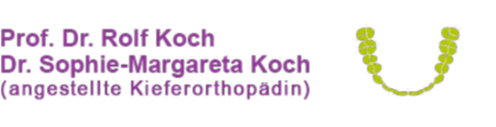
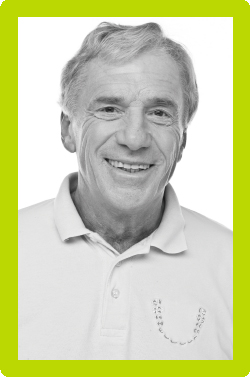
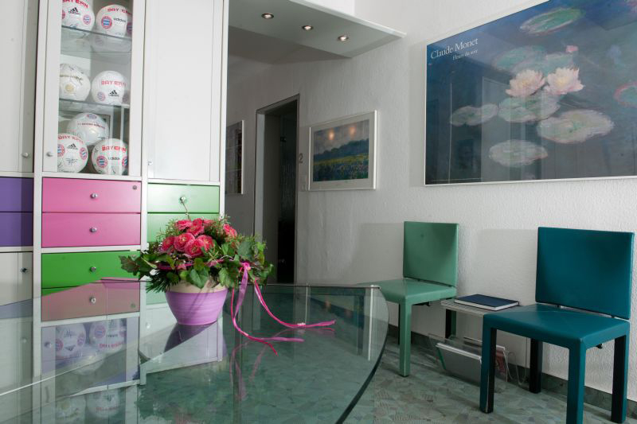
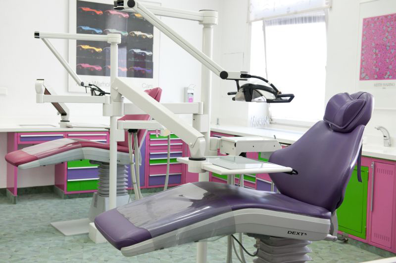
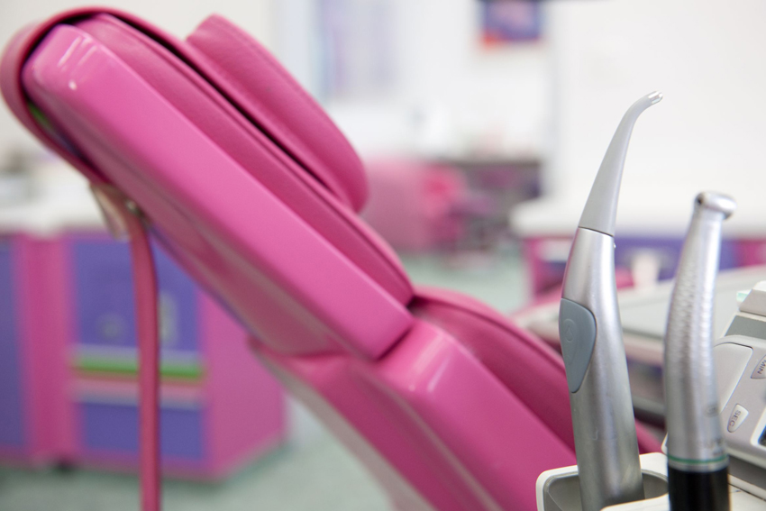
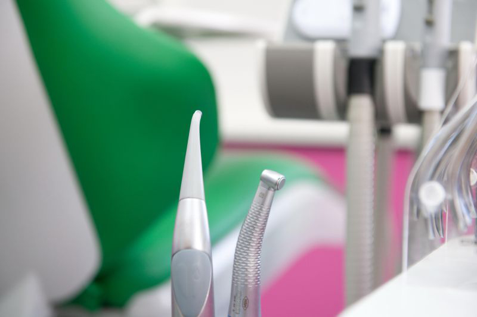
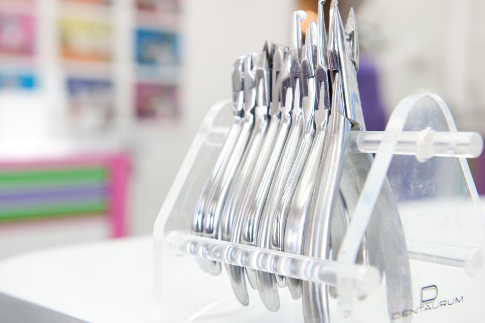
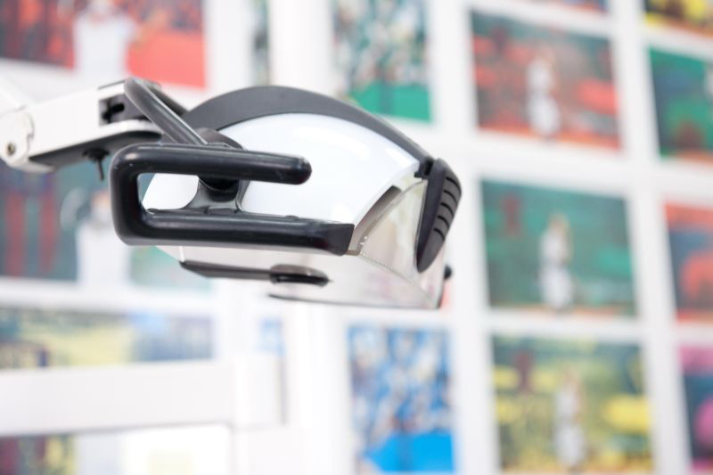
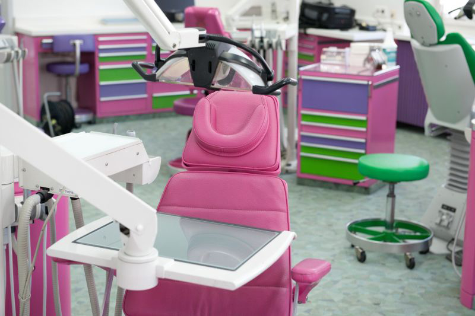
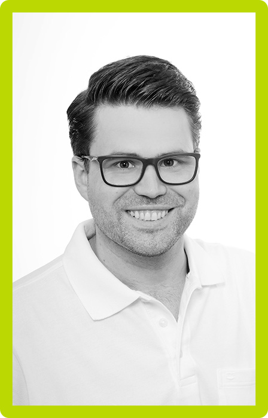

Frühbehandlung für Kinder
Ab etwa sechs Jahren erkennen wir Fehlstellungen, solange sie sich mit kleinem Aufwand lenken lassen.
Mehr erfahren
Wir behandeln an unseren beiden Standorten in Bamberg und Ebermannstadt. Von der Frühbehandlung im Milchgebiss bis zur unsichtbaren Zahnspange für Erwachsene.
Bei jedem Kontrolltermin suchst du dir neue Gummis aus. Probier hier schon mal aus, welche Farbe dir am besten gefällt.

Eine Zahnspange begleitet Kinder und Jugendliche oft über mehrere Jahre. Deshalb nehmen wir uns Zeit, erklären jeden Schritt in Ruhe und beziehen Eltern in jede Entscheidung ein. In der Erstberatung schauen wir uns den Kiefer genau an und sagen offen, ob eine Behandlung sinnvoll ist und wann der richtige Zeitpunkt dafür wäre.
Besonders am Herzen liegt uns die Frühbehandlung. Viele Fehlstellungen lassen sich im Wachstum mit wenig Aufwand korrigieren, solange der Kiefer noch formbar ist. Erwachsene begleiten wir mit diskreten Lösungen wie Alignern, Keramikbrackets oder der Lingualtechnik, die von außen unsichtbar bleibt.
Ihr Prof. Dr. Rolf Koch mit dem gesamten Praxisteam
Wir behandeln jedes Alter, vom ersten Kontrollbesuch im Milchgebiss bis zur Zahnkorrektur mit 50. Welche Methode passt, klären wir gemeinsam in der Erstberatung.
Ab etwa sechs Jahren erkennen wir Fehlstellungen, solange sie sich mit kleinem Aufwand lenken lassen.
Mehr erfahrenMetall oder Keramik, präzise geplant. Die Farbe der Gummis suchst du dir bei jedem Termin neu aus.
Mehr erfahrenBei der Lingualtechnik sitzen die Brackets innen an den Zähnen und bleiben von außen unsichtbar.
Mehr erfahrenDurchsichtige Schienen, die Sie zum Essen und Zähneputzen einfach herausnehmen. Beliebt bei Erwachsenen.
Mehr erfahrenDer Klassiker für das Wechselgebiss. Leicht zu reinigen und in vielen Farben gestaltbar.
Mehr erfahrenBei Knacken, Verspannungen oder nächtlichem Zähneknirschen finden wir die Ursache und behandeln gezielt.
Mehr erfahrenEine individuell gefertigte Schiene hält die Atemwege nachts frei und sorgt für ruhigeren Schlaf.
Mehr erfahrenRetainer und Nachkontrollen halten das Ergebnis dauerhaft an Ort und Stelle.
Mehr erfahrenViele Kinder kommen mit Respekt zu uns und gehen mit einem Aufkleber und guter Laune wieder raus. Beim Erstbesuch wird nichts gebohrt und nichts geklebt. Wir schauen nur und erklären.

Pink, Limette, Türkis und Violett statt Klinikweiß. Die Farben unserer Behandlungsräume sind eine bewusste Entscheidung, weil sich Kinder hier wohler fühlen und Erwachsene entspannter sind.






Wir zeigen unsere Google Bewertungen ungefiltert, direkt aus unseren Profilen für Bamberg und Ebermannstadt.
Unsere Tochter hatte großen Respekt vor dem ersten Termin. Nach zehn Minuten hat sie gelacht und wollte gleich wissen, welche Farbe sie beim nächsten Mal aussuchen darf.
Sehr gründliche Beratung und ein Kostenplan, den man wirklich versteht. Es wurde nichts empfohlen, was nicht nötig ist.
Kurze Wartezeiten, freundliches Team und Termine, die auch neben der Schule funktionieren. Genau so soll es sein.
Alle Bewertungen finden Sie bei Google Bamberg und Google Ebermannstadt
Wir sind vier Behandlerinnen und Behandler und arbeiten mit einem eingespielten Team aus Zahnmedizinischen Fachangestellten an beiden Standorten.
Fachzahnarzt für Kieferorthopädie
Angestellte Kieferorthopädin

Fachzahnarzt für Kieferorthopädie
Zahnärztin in Weiterbildung
Sie sind ZFA, Kieferorthopädische Fachassistenz oder Auszubildende? Wir suchen Verstärkung für unser Team.
Offene Stellen ansehenAn beiden Standorten behandeln wir Sie im selben Team. Wählen Sie einfach die Praxis, die für Sie näher liegt.
| Montag | 8:30 bis 12:00 Uhr |
|---|---|
| Dienstag | 8:30 bis 18:00 Uhr |
| Mittwoch | 8:30 bis 12:00 Uhr |
| Donnerstag | 8:30 bis 19:00 Uhr |
| Freitag | 8:30 bis 13:00 Uhr |
| Samstag und Sonntag | geschlossen |
| Montag | 13:00 bis 18:00 Uhr |
|---|---|
| Mittwoch | 9:00 bis 18:00 Uhr |
| Übrige Tage | geschlossen |
Weitere Termine in Ebermannstadt vergeben wir online oder nach telefonischer Absprache.
Anfahrt und Parken in EbermannstadtOb Erstberatung als Neupatient oder der nächste Kontrolltermin: Wir zeigen Ihnen die freien Zeiten beider Standorte, Sie buchen selbst. Die Bestätigung schicken wir sofort per E-Mail, Verschieben und Absagen funktioniert genauso einfach.